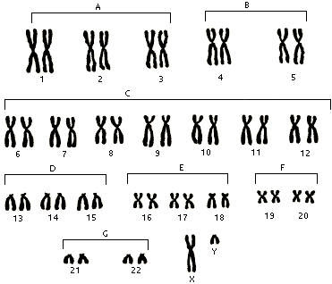

En este artículo presentamos las generalidades sobre los trastornos que se pueden relacionar con cada uno de los 23 cromosomas del genoma humano. Los primeros 22 pares se les llama autosomas y el último par 23 es el que determina el sexo: XX para mujer y XY para hombre. Codificados en las moléculas de ADN se encuentran entre 20000 a 25000 genes. Los desórdenes genéticos se pueden definir de acuerdo a los siguientes tipos:
Desorden numérico.- cuando hay una cantidad anormal de un cromosoma como es el caso de la trisomía 21 o Síndrome de Down.
Desorden estructural.- cuando hay una alteración en la estructura del cromosoma, en este caso se alteran los genes con duplicaciones, supresiones, inversiones, desplazamientos (translocaciones) o anillos.
Mutación congénita.- el trastorno se hereda de uno o los dos padres; o bien, se da en las etapas de formación de los gametos (óvulo o espermatozoide); o en las primeras etapas de la formación del embrión. Como resultando: todas las células del organismo presentan la mutación.
Mutación tipo mosaico.- Se da en el transcurso de la vida del individuo, como resultado solo algunas células o tejidos presentan la mutación.

Mediante el testeo con Bioenergética se pueden detectar trastornos de tipo genético desde el momento de la gestación y tratar con biomagnetismo médico: